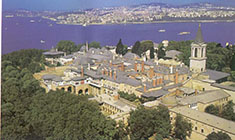

| Topkapı Sarayı , İstanbul Sarayburnu'nda, Osmanlı İmparatorluğu'nun 600 yıllık tarihinin 400 yılı boyunca, devletin idare merkezi olarak kullanılan ve Osmanlı padişahlarının yaşadığı saraydır. Bir zamanlar içinde 4.000'e yakın insan yaşamıştır. Topkapı Sarayı Fatih Sultan Mehmed tarafından 1478’de yaptırılmış, Abdülmecit’in Dolmabahçe Sarayı’nı yaptırmasına kadar yaklaşık 380 sene boyunca devletin idare merkezi ve Osmanlı padişahlarının resmi ikametgahı olmuştur. Kuruluş yıllarında yaklaşık 700.000 m.² lik bir alanda yer alan sarayın bugünkü alanı 80.000 m² dir. |